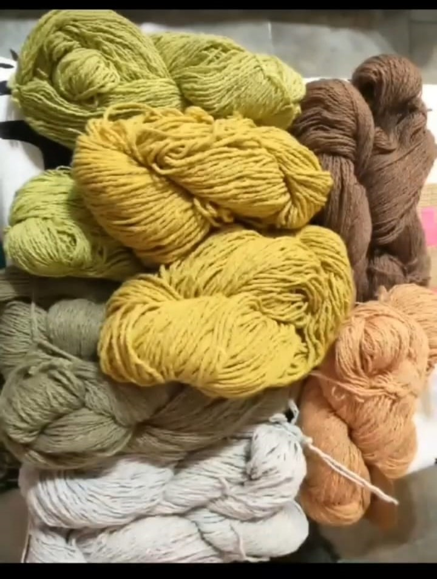
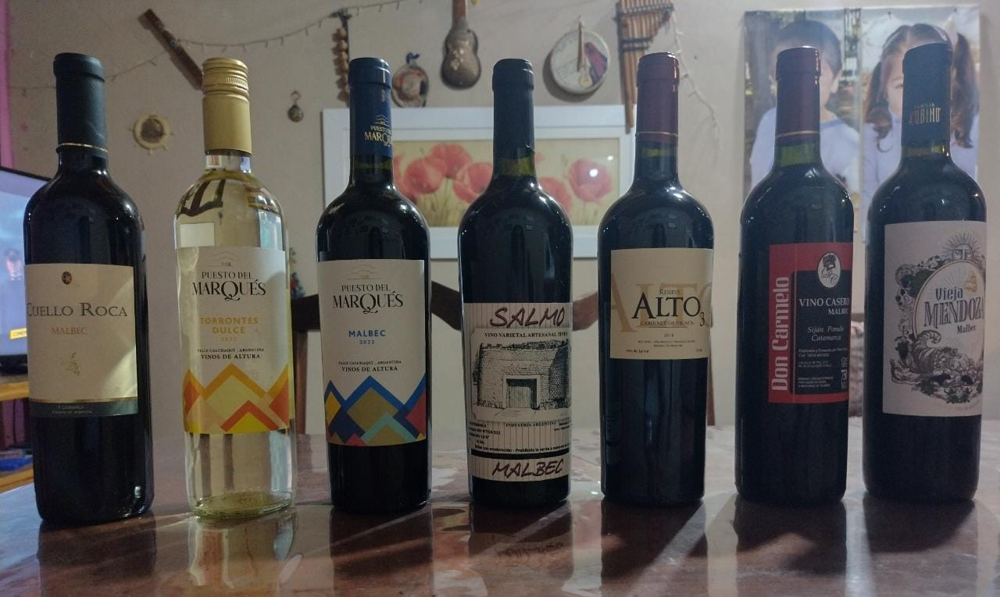

De la Puna Catamarqueña
Productos regionales
¿Te gusta viajar pero no podes? Te acercamos la provincia de Catamarca hasta tu casa
La provincia de Catamarca, cuenta con una variedad de paisajes, debido a su amplia paleta de relieves, y extensa geografía, las cuales se pueden apreciar en distintas épocas el año, siendo las más recomendadas, tanto la primavera como el invierno. Su mercado de turismo está en constante auge, y se vislumbra prometedor
Desde Catamarca con amor Vinos, aceite de oliva, lana, alfajores, nuecesQué tenemos para ofrecer

Productos Autóctonos: La provincia de Catamarca ofrece una gran variedad de paisajes y su historia la convierten en una provincia que merece ser conocida, y si la posibilidad de hacerlo fisicamente no es posible, nosotros te acercamos a Catamarca hasta tu casa, a través de su gran variedad de productos.
Lanas de primera calidad: La lana de alpaca tiene una textura especial que le da una calidez y ligereza especiales. Siendo más calida y más resistencia que la lana de oveja.
Vinos de altura: Los viñedos están plantados a una altura de 1.300 metros sobre el nivel del mar, en el nacimiento de una ladera oeste orientada a las montañas de la precordillera de Los Andes, en el extremo sur de los Valles Calchaquíes. Sobre la cordillera está ubicada la cadena montañosa de los Seismiles, con picos de 6.000 metros de altura, que llega al límite con Chile, un desafío para andinistas y un atractivo para viajeros de todo el mundo quienes se asombran por los colores de la tierra y los animales silvestres, vicuñas mayormente, que recorren los valles en su andar regio, lento, soberano.

Aceite de oliva: El aceite de oliva de origen Catamarca, es de calidad superior. El clima, la altura y la tierra le otorgan características organolépticas y condiciones químicas que lo convierten en uno de los aceites más buscados a nivel nacional.